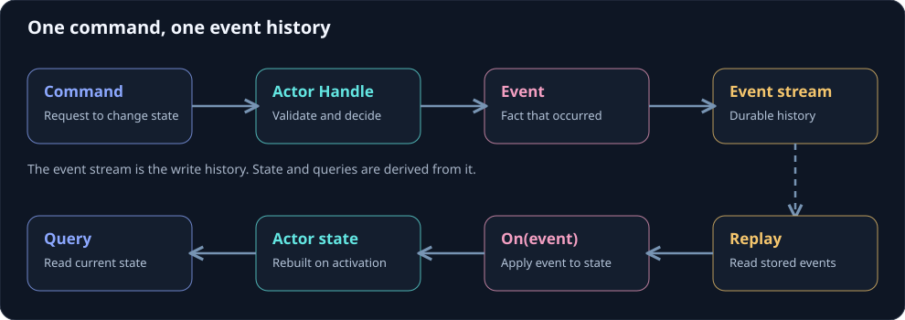

Build your first actor
An event-sourced actor turns a command into an event and rebuilds its in-memory state by applying events. This counter is deliberately small so the roles are visible. The example uses Troolio.Core 10.0.6 and Orleans 10.
On this page

Define messages and the actor
using Microsoft.Extensions.Configuration;
using Orleans;
using Troolio.Core;
using Troolio.Stores;
namespace MyApp;
public interface ICounterActor : IActor { }
[GenerateSerializer]
public record Increment(Metadata Headers) : Command<ICounterActor>(Headers);
[GenerateSerializer]
public record Incremented(Metadata Headers) : Event(Headers);
[GenerateSerializer]
public record CurrentCount : Query<ICounterActor, int>;
public sealed class CounterActor(IStore store, IConfiguration configuration)
: EventSourcedActor(store, configuration), ICounterActor
{
private int count;
public IEnumerable<Event> Handle(Increment command) =>
[new Incremented(command.Headers)];
public void On(Incremented _) => count++;
public int Handle(CurrentCount _) => count;
}
Increment is a command. Handle emits an Incremented event. On applies the event both after an accepted append and during replay when the actor activates again. CurrentCount reads the actor's current state. The actor's event stream, not the count field, is the durable write history when a durable store is configured.
Metadata carries correlation, user, device, and message IDs. In a serving application, the host must bind the user and target to the current authenticated principal. Caller supplied headers alone are not authority.
Compile the example
Add the snippet as Counter.cs in a net10.0 class library that references Troolio.Core 10.0.6 and Microsoft.Orleans.Sdk 10.0.0, then run:
dotnet build -c Release
The snippet describes actor behavior inside a host. Host setup shows the next wiring step.
Next decisions
- Choose an event store and serializer. The bundled in-memory store is for local learning and tests.
- Choose how to project events into read models.
- Decide whether the ordinary command path is sufficient or the selected atomic route is required.